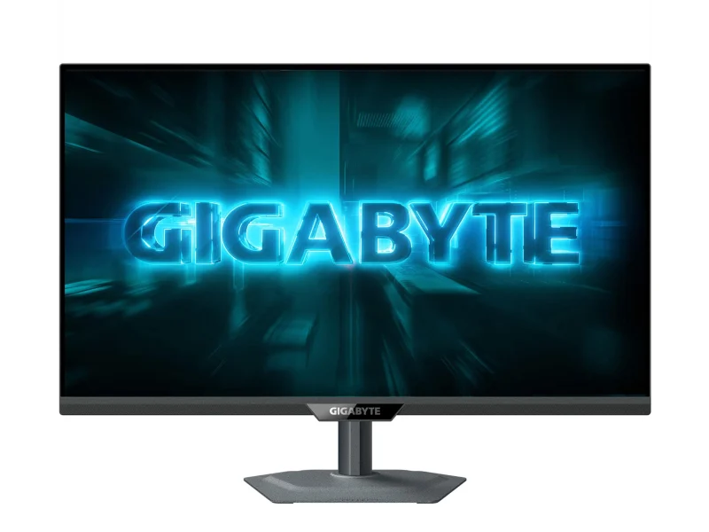
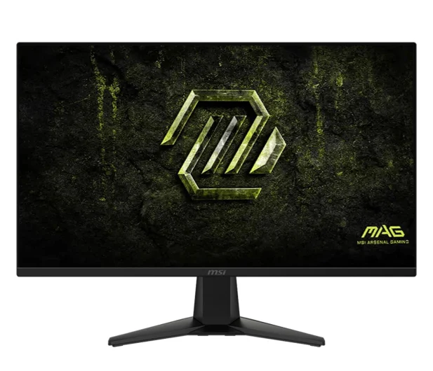

Iiyama G2741QSU-B1

Monitor iiyama G-Master G2741QSU-B1 Black Hawk to idealny wybór dla zapalonych graczy,
którzy szukają wyjątkowego doświadczenia wizualnego.
Dzięki swojej matowej, 27-calowej matrycy IPS w rozdzielczości WQHD,
każdy szczegół w grach staje się bardziej wyrazisty,
co pozwala na pełne zanurzenie w wirtualnym świecie.
Monitor została zaprojektowany z myślą o graczach,
oferując wysoką częstotliwość odświeżania 144 Hz oraz niski czas reakcji 1 ms,
co znacząco wpływa na płynność rozgrywki.
Cena: 629 zł
Link do produktu
Gigabyte G27Q2

Monitor Gigabyte G27Q2 to doskonały wybór dla pasjonatów gier oraz multimediów.
Jego imponująca jakość obrazu w rozdzielczości WQHD oraz częstotliwości odświeżania 200 Hz sprawiają,
że każdy detal jest perfekcyjnie widoczny.
Dzięki nowoczesnej matrycy IPS,
zyskujesz znakomite kąty widzenia oraz żywe kolory,
które ożywią Twoje ulubione tytuły i filmy.
Cena: 629 zł
MSI MAG 275QF E20

Monitor MSI MAG 275QF E20 to idealny wybór dla zapalonych graczy,
którzy cenią sobie wysoką jakość obrazu oraz płynność podczas intensywnych rozgrywek.
Dzięki technologii Rapid IPS oraz rozdzielczości WQHD,
każdy szczegół na ekranie będzie wyrazisty i pełen kolorów.
Jego nowoczesny design bezramkowy sprawi,
że idealnie wkomponuje się w Twoje stanowisko pracy lub gamingowe.
Cena: 579 zł